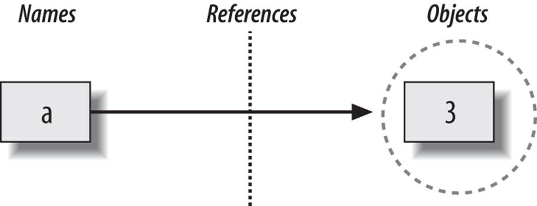
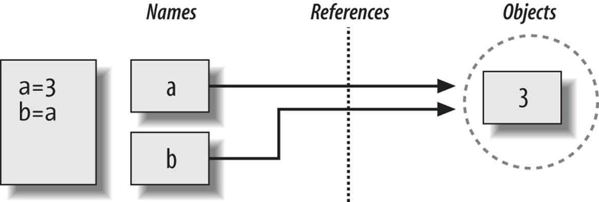
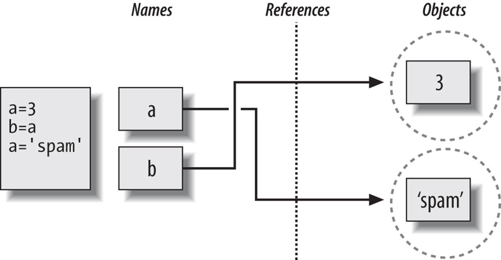

In computing, we deal with values, different numbers, text, images (which are numbers), boolean (logical). These values need to be represented in the memory of a computer, that is a number of binary switches (“0’s and 1’s”).
Integers
A simple example is an integer number that can be expressed in the base2 (in the example, using 4 “bits”): 0001 is 1 in decimal, 0101 is (from left to right \(0\cdot2^3 + 1\cdot2^2 + 0\cdot2^1 + 1 \cdot 2^0(=1) = 5\). Using enough bits, we can represent any integer number (and use, for example, the leftmost bit as a flag to indicate that a minus is in front of it in order to produce a negative number). Technically, the types encountered are usually called int32, int64 (being the most common ones, but others exist too), where the trailing number indicates the number of bits used. In Python, we do not need to take care of it and integers are “precise enough”. A huge advantage of using Python!
Comparing integer numbers is always correct, because each integer has one, and exactly one representation.
Strings (aka text)
Having defined integers, it’s easy to define text: each letter corresponds to an integer number (hidden to us users). All that is needed is something that marks a stream of bites as “text” and then evaluates that a certain number corresponds to a letter.
Floating point numbers
This is where things get a bit tricky: while there is exactly one integer between the integers 4 and 6, for example, there are infinitly many floating point numbers between, say 3.1 and 3.2 and the number of digits can easily be large. This leads to a practical problem: we cannot accurately represent floating point numbers! 3.1 maybe is not equal to 3.1!
Floating point numbers consist of two parts: an “integer-like” part, that is, a numeric value. And another part that defines the exponent of a base that the numerical value is multiplied by.
Imagine that every float is like an integer, “shifted” to the left or right.
The types are usually called float32 or float64 (and more). Usually, use float64 if ever needed for any scientific computing (machine learning being a notable exception).
A number like 10/3 needs infinitely many digits to represent it exactly, but due to the limited precision that can be stored, it will be truncated in the computer. Therefore \((10 / 3) \cdot 3\) equals \(10\), but a computer will return a number like 9.99999999 (with many, typically 8 or 16 digits for a float 32 or float64 respectively), but limited.
(Python sometimes tries to hide this fact with some numbers, but nothing to rely on)
Another consequence is limited precision: adding a very small number to a very large one (i.e. if the small one is smaller than the precision that the large one is stored with, the small one will be “ignored”, as it first has to be converted to the same representation as the large one.
Basic types and operations
Python has several basic types - numerical (float, int, complex) - string - bool
There are several operations defined on them, as we have already seen in examples.
a =1# creates an integerb =3.4# float# several ways for stringsc ="hello"d ='world'cd ="welcome to this 'world' here"# we can now use '' inside (or vice versa)e ="""hello world"""# which we can also wrape2 ="""helloworldcome here!"""g =Trueprint(a, b, c, d, cd, e)print(e2)print(g)
1 3.4 hello world welcome to this 'world' here hello world
hello
world
come here!
True
type(a)
int
With type(...), we can determine the type of an object.
strong typing
Python is strongly typed. This means that the type of the variable matters and some interactions between certain types are not directly possible.
a =1b =2
a + b
3
These are two integers. We are not surprised that this works. What about the following?
mix_str_int = a +"foo"
---------------------------------------------------------------------------TypeError Traceback (most recent call last)
CellIn[5], line 1----> 1 mix_str_int = a+"foo"TypeError: unsupported operand type(s) for +: 'int' and 'str'
Maybe the following works?
mix_str_int2 = a +"5"
---------------------------------------------------------------------------TypeError Traceback (most recent call last)
CellIn[6], line 1----> 1 mix_str_int2 = a+"5"TypeError: unsupported operand type(s) for +: 'int' and 'str'
Python is strict on the types, but we can sometimes convert from one type to another, explicitly:
a +int("5")
6
…which works because int("5") -> 5.
There are though some implicit conversions in Python, let’s look at the following:
f =1.2print(type(f))
<class 'float'>
int_plus_float = a + fprint(type(int_plus_float))
<class 'float'>
This is one of the few examples, where Python automatically converts the integer type to a float. The above addition actually reads as
int_plus_float =float(a) + f
Similar with booleans as they are in principle 1 (True) and 0 (False)
True+5
6
For readability, it is usually better to write an explicit conversion.
Container types
Python has several container types as also found in other languages. The most important ones are: - list (~array in other languages) - dict (~hash table in other languages)
They can contain other objects which can then be assigned and accessed via the [] operator (we will have a closer look at operators later on)
A list stores elements by indices, which are integers, while a dict stores elements by a key, which can be “any basic type” (to be precise: by their “hash”, it can be any immutable type).
# creating a listlist1 = [1, 2, 3]print(list1)
[1, 2, 3]
We can access these element by indices, starting from 0
list1[0]
1
We can also assign a value to an place in the list
list1[1] =42print(list1)
[1, 42, 3]
and it can be extended with elements
list1.append(-5)print(list1)
[1, 42, 3, -5]
Choosing a value that is not contained in the list raises an error. It is verbose, read and understand it.
Being able to understand and interpret errors correctly is a key to becoming better in coding.
list1[14]
---------------------------------------------------------------------------IndexError Traceback (most recent call last)
CellIn[16], line 1----> 1list1[14]IndexError: list index out of range
We can play a similar game with dicts
person = {'name': "Rafael Silva Coutinho", 'age': 37, 5: True, 11: "hi"} # we can use strings but also other elementsprint(person)
As any object in Python, there are many useful methods on list and dict that help you accomplish things. For example, what if we want to retrieve a value from a dict only if the key is there and otherwise return a default value? We can use get:
hair_color = person.get('hair_color', 'unknown color') # the second argument gets returned if key is not in dictprint(hair_color)
unknown color
Mutability
Python has a fundamental distinction between mutable and immutable types.
Mutable means, an object can be changed Immutable means, an object can not be changed
As an example, 5 can not change; in general the basic types we looked at cannot change. We can change the value that is assigned to a variable, but the object 5 remains the same. The list and dicts we have seen above on the other hand are mutable, they have changed over the course of execution.
Every mutable object has an immutable counterpart (but not vice-versa): - list -> tuple - dict -> frozendict - set -> frozenset - etc.
# creating a tupletuple1 = (1, 3, 5)# or from a listtuple_from_list =tuple(list1)
list2 = [4, 5]tuple2 = (3, 4)list3 =list(tuple2)
print(list2)print(tuple2)print(list3)
[4, 5]
(3, 4)
[3, 4]
While we can access the elements as we can for a list, we can neither assign nor append (or in generate mutate the object:
print(tuple1[1]) # access works!
3
tuple1[0] =5
---------------------------------------------------------------------------TypeError Traceback (most recent call last)
CellIn[27], line 1----> 1tuple1[0] = 5TypeError: 'tuple' object does not support item assignment
We will soon see the effects and needs for this…
Exercise
Create a list with 3 elements. Then create a tuple with 5 elements, one of them being the list. Change an element in the list. Did it change in the tuple? Do you understand this?
Python is dynamically typed. This means that a variable, which once was an int, such as a, can be assigned a value of another type (this maybe sounds trivial, but this is not possible to do in many other languages).
a =1print(a)
1
a ="one"print(a)
one
a = list1print(a)
[1, 42, 3, -5]
… and so on
Assignement and variables
We’ve seen a few things up to now but have not really looked at the assignement and variables itself. Understanding Pythons variable is crucial to understand e.g. the following:
a =5b = aprint(a, b)
5 5
a =3print(a, b)
3 5
So far so good, no surprise here.
list1 = [1, 3]list2 = list1print(list1, list2)
[1, 3] [1, 3]
list2[0] =99print(list1, list2)
[99, 3] [99, 3]
…but that was probably unexpected! Let’s have a look at Pythons variable assignement.
Python variable assignement
Assigning something to a variable in Python makes a name point to an actual object, so the name is only a reference. For example creating the variable a and assigning it the object 5 looks like this: 
a =3list_a = [1, 2]print(a)print(list_a)
3
[1, 2]

reference2
b = a # this assigns the reference of a to blist_b = list_aprint(a, b)print(list_a, list_b)
3 3
[1, 2] [1, 2]
Both objects, b and list_b point now to the same objects in memory as a and list_a respectively. Re-assigning a variable let’s it point to a different object 
a ='spam'list_a = [1, 5, 2, 'world', 1]print(a, b)print(list_a, list_b)
spam 3
[1, 5, 2, 'world', 1] [1, 2]
Let’s make them point to the same object again:
b = alist_b = list_a print(a, b)print(list_a, list_b)
Now we understand what happend: the object that both variables are pointing to simply changed. This is impossible with immutable objects (such as 3), since they are immutable.
Mutable objects usually offer the ability to create a copy.
list_c = list_a.copy() # now there are two identical lists in the memory
list_a and list_b, pointing to the same object that was mutated, have changed, while list_c, pointing to a different object, remained the same.
Let’s have a look at two operators: the “trivial” == and the is: we know == pretty well, it tells whether the left and the right side are the same. More specific, it tells whether both sides have/represent the same value, not whether they are in fact the same object! The operator is tells us, whether two objects are the same object (compare our assignement model above!).
print(list_a == list_c) # not the sameprint(list_a == list_b) # the same
False
True
list_c[2] ='my'# make it the same as the other listsprint(list_a == list_c)
True
But, as we learned before, they are not the same objects!
print(list_a is list_c) # nope!print(list_a is list_b) # yes!
False
True
Usually, we are interested to compare the values, using == (notable exception: checking, if a value is None means to check using the identity equality is.
Exercise 2: Create a list a = [1, 2, 3] and create a new variable b and assign it to a. Compare a and b using == and is. Print the results. Modify a by appending 4 to it and print b. Do you understand why you have this solution?
# Step 1: Create a lista = [1, 2, 3]# Step 2: Assign a to bb = a# Step 3: Compare a and b using == and isprint("a == b:", a == b) # Expected output: Trueprint("a is b:", a is b) # Expected output: True# Step 4: Modify a by appending 4a.append(4)# Step 5: Print bprint("b:", b) # Expected output: [1, 2, 3, 4]
a == b: True
a is b: True
b: [1, 2, 3, 4]
Explanation:
a == b and a is b are both True because b is assigned directly from a, meaning they refer to the same list object. After appending 4 to a, b also changes because both a and b point to the same list in memory.